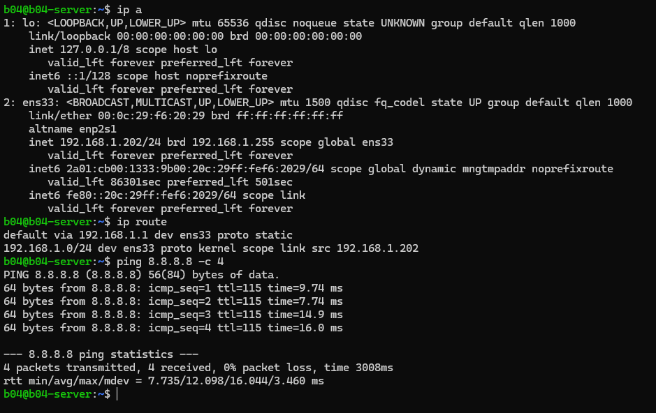
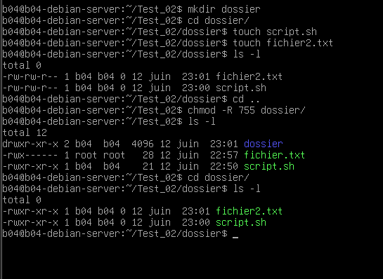
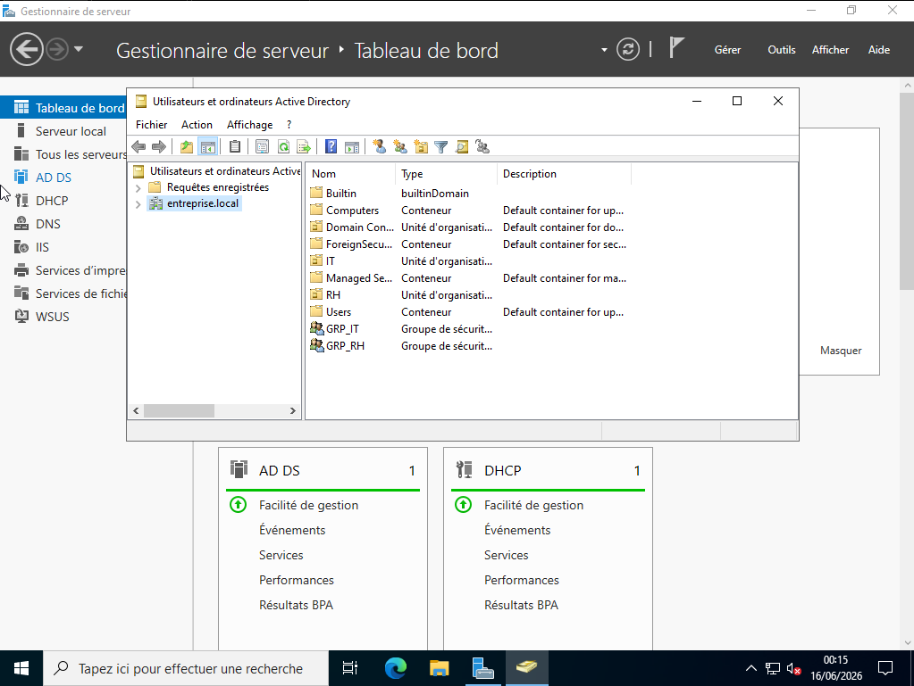
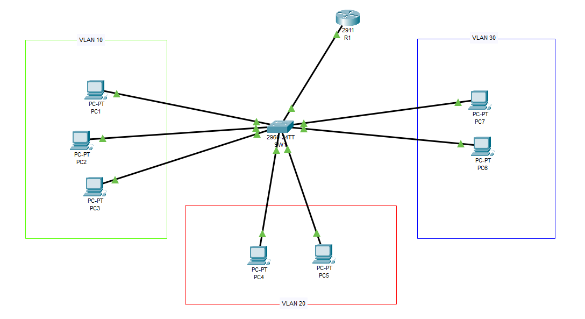
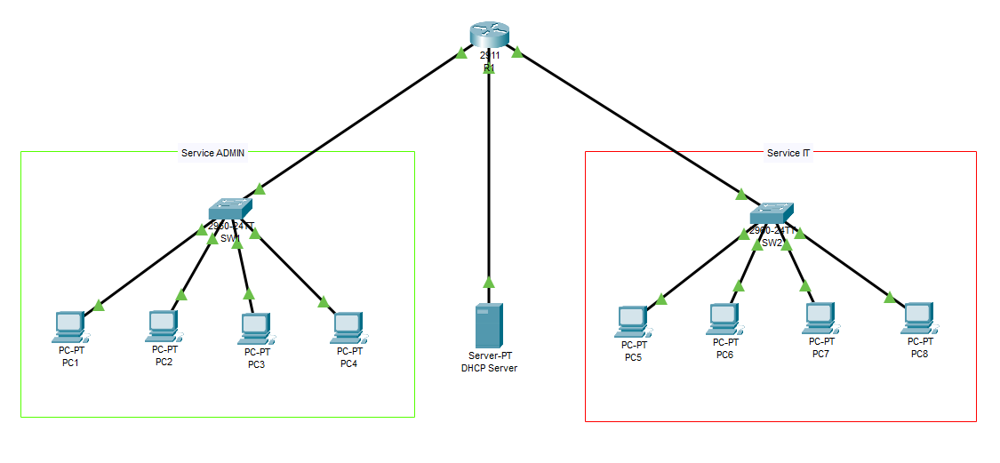
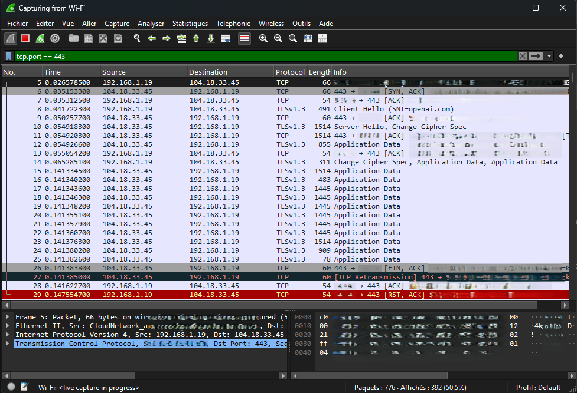
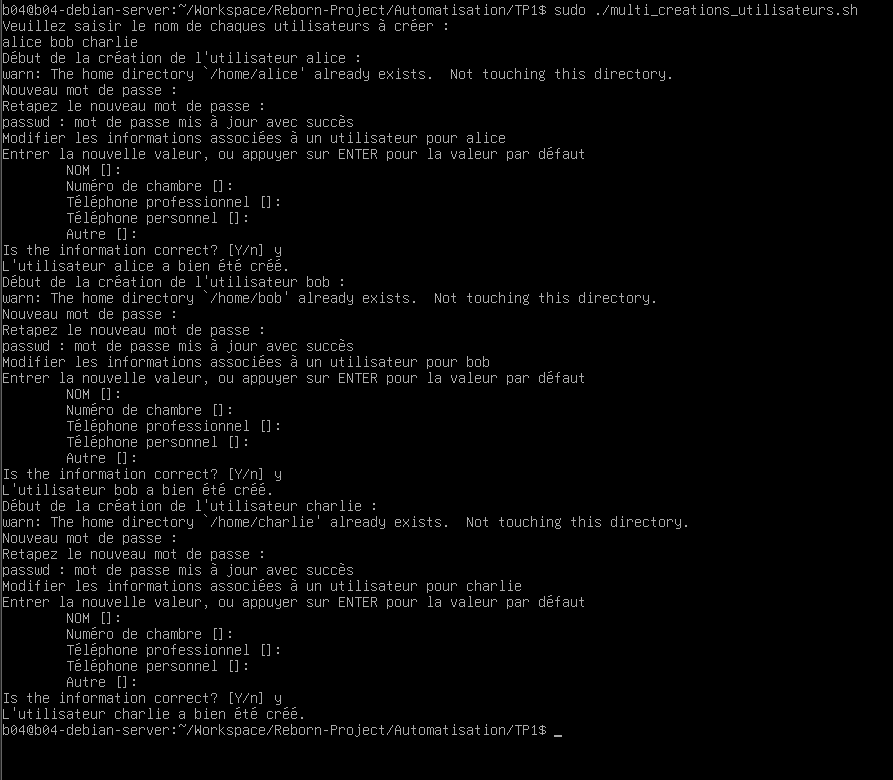
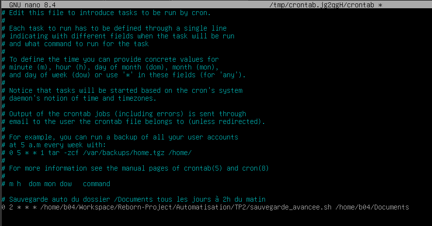
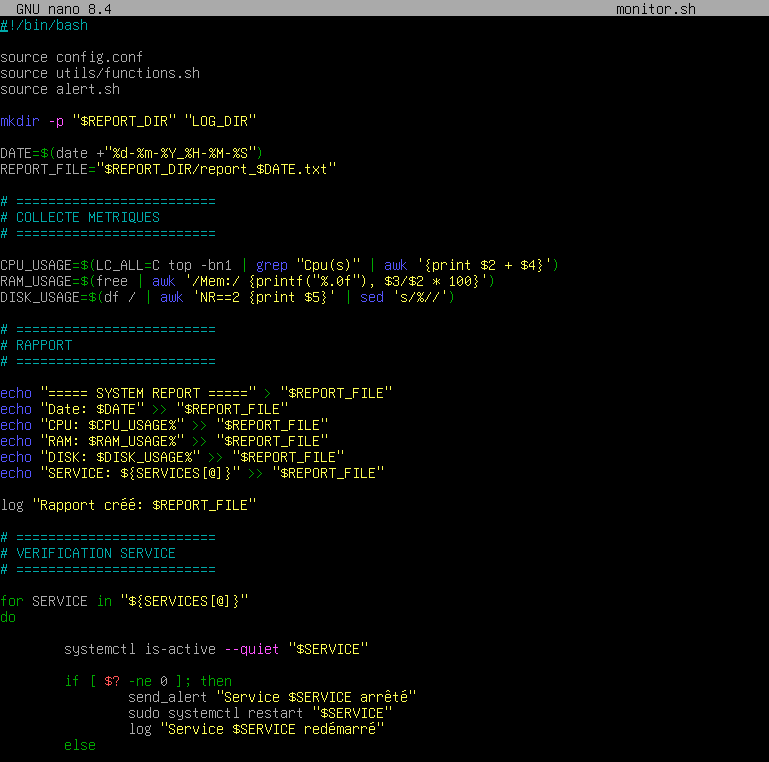

Mes Projets

Projet 1 - Configurer Réseau et SSH sur Ubuntu Server
Mise en place d'un serveur Linux virtualisé, configuration de son accès réseau et administration à distance sécurisée.
Documentation PDF du projet 1
Projet 2 - Gestion des droits et utilisateurs sur Debian
Découverte des mécanismes de gestion des fichiers, des permissions et des utilisateurs sous Linux.
Documentation PDF du projet 2
Projet 3 - Lab VMware Infrastructure Entreprise
Déploiement d'un environnement d'entreprise simulé permettant la gestion centralisée des utilisateurs, des ressources réseau et des stratégies de sécurité
Documentation PDF du projet 3
Projet 4 - Routage Inter VLAN
Mise en œuvre du routage inter-VLAN sur Cisco Packet Tracer à l'aide de la méthode Router-on-a-Stick.
Documentation PDF du projet 4
Projet 5 - Services séparés et DHCP fonctionnel
Projet permetant de comprendre le fonctionnement d'un réseau d'entreprise simple, du routeur, des switchs ainsi que l'attribution dynamique des adresses IP.
Documentation PDF du projet 5
Projet 6 - Wireshark
L'objectif de ce TP a été de découvrir les bases de l'analyse réseau et de la sécurité informatique à l'aide de l'outil Wireshark.
Documentation PDF du projet 6
Projet 7 - Sauvegarde et Création Utilisateurs v1
L'objectif ici est de découvrir les bases du Scripting Bash afin d'automatiser des tâches courantes d'administration système.
Documentation PDF du projet 7
Projet 8 - Sauvegarde et Création Utilisateurs Avancée
Découverte des notions essentielles de Scripting telles que les fonctions, la gestion des erreurs, la journalisation (logs) et le traitement automatisé de données.
Documentation PDF du projet 8
Projet 9 - Système de Monitoring et Devops Automatisé
Développement d'un mini système DevOps permettant d’automatiser la supervision et l’administration d’un serveur Linux.
Documentation PDF du projet 9